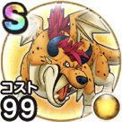

ゲリュオン
ほこらこころ最大コスト+4スキルの斬撃ダメージ+10%スキルの体技ダメージ+5%バギ属性斬撃・体技ダメージ+5%けもの系へのダメージ+10%幻惑耐性+10%踊り耐性+10% / 8.5点
くわしい特徴
【ランク特殊効果】 こころ最大コスト+4スキルの斬撃ダメージ+10%スキルの体技ダメージ+5%バギ属性斬撃・体技ダメージ+10%けもの系へのダメージ+20%幻惑耐性+15%踊り耐性+15%こころ最大コスト+4スキルの斬撃ダメージ+10%スキルの体技ダメージ+5%バギ属性斬撃・体技ダメージ+5%けもの系へのダメージ+10%幻惑耐性+10%踊り耐性+10%